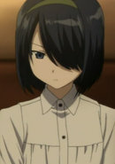

|
Jenny Realight |
- Fairy Tail
- Fairy Tail OVA
- Fairy Tail (2014)
|
Jenny Realight is a mage of Blue Pegasus and the current Miss Fiore. Jenny is popular and elegant young lady. She is pale skinned, top model physical, thin and large busts. She usually seen wearing makeup. |
 |
Maria Ross |
- Fullmetal Alchemist: Brotherhood
- Fullmetal Alchemist: Brotherhood - 4-Koma Theater
|
Maria Ross is a Second Lieutenant for Central. She put in charge of the Elric brothers during their stay. She acts as a a paternal figure to Edward. |
 |
Miyu Edelfelt |
- Fate/kaleid liner Primsa Illya
- Fate/kaleid liner Prisma Illya Specials
- Fate/kaleid liner Prisma Illya 2wei!
- Fate/kaleid liner Prisma Illya 2wei! OVA
- Fate/kaleid liner Prisma Illya 2wei Herz!
- Fate/kaleid liner Prisma Illya 2wei Herz! Specials
- Fate/kaleid liner Prisma Illya 3rei!!
- Fate/kaleid liner Prisma Illya 3rei!! Specials
- Fate/kaleid liner Prisma Illya Movie: Sekka no Chikai
|
Miyu Edelfelt is a young girl who is a magical girl. She serves as a maid for Luvia at manison to keep her identy. She understands her abilities better than Illya. She takes her roles seriously. |
|  |
Orphan |
|
The Orphan is a girl spy working for the Science Academy of Sauville. She does not know her real name or her birthday. She is a real orphan. |
 |
Tsubaki Nakatsukasa |
- Soul Eater
- Soul Eater NOT!
|
Tsubaki Nakatsukasa is Black Star's Dark Demon Blade partner. She can change into multiple ninja weapons. She has a very forgiving personality. |


.jpg)